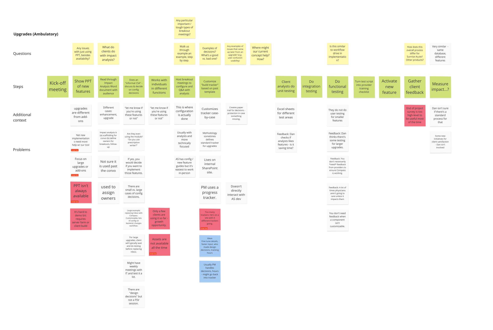

Build Phase
Choosing a direction
As we headed into the build phase, we had to choose between two promising but different conceptual directions. Should we focus on interactive mockups, enabling implementation teams to generate prototypes live to facilitate design decision-making? Or, should we create a feedback tool with analytics to collect, analyze, and synthesize client feedback?
A key driver of poor decision-making is a lossy communication process, both between Allscripts and its clients, as well as between Allscripts’ headquarters and its field teams.
As an implementation team, how can you make a valid, informed decision if a key client stakeholder misses a decision-making meeting? How can you catch them up efficiently if your only tools are Excels, Word documents, and Webex calls? And, if you’re Allscripts, how do you improve your overall client delivery processes without data?
“We can become the vendor that gives you choices, but guides you towards the right ones through data and best practices.”
—Lisa Khorey
EVP, Client Delivery Services
After discussing the technical feasibility and potential timeline of each direction, we decided to focus on the collection and analysis of feedback. We came up with Chorus, an internal tool for Allscripts, that would help them achieve the following three goals we set forth:
- Engaging more stakeholders in the process
- Guiding the decision-making process to avoid overcustomization
- Keeping track of the communication process and getting everyone on the same page with respect to the project
Chorus's features are as follows:
Smart notetaking templates
Capture decisions on the fly with customizable templates, based on real implementation processes.
Physician-friendly follow-ups
Publish and send decision summaries for input or approvals with a click.
Track progress and analyze feedback
Keep track of all decisions and instantly view feedback to move the project forward.
Design Convergence
Given our newly focused scope, we came up with a more specific problem space for our design solution.
Through the use of story maps, lots of whiteboarding, and calls with our clients to determine what processes made sense at an extremely granular level, we came up with a user flow while iterating on medium-fidelity designs.
Implementation Consultant Flow
In Chorus, Implementation Consultants can view the progress of their project in the dashboard, which is meant to serve as a replacement for the existing spreadsheet documentation trackers the company currently uses.
Additionally, implementation consultants can take structured notes based on topics, which correspond to features in the EHR.
This abstraction was tested and validated with various members of the EHR project team.One key design challenge we encountered was how to represent the difference between a template of notes and a shared proposal with key stakeholders. We attempted to reflect this navigationally and through the use of color.

Decision Maker Flow
Our primary concerns during designing this flow were as follows:
- How do you make it easy for decision makers to quickly respond?
- How do we create symmetrical user experience between the implementation consultant and the decision maker (physician, nurse, etc)
Since decision makers can either give their unfiltered input or approve decisions, we modeled our interface by looking at the questionnaire domain. We additionally incorporated binary feedback mechanisms to facilitate quick feedback, as a training consultant mentioned to us that the average attention span of a physician can be less than 2 minutes.
Final user testing and recommendations
We measured satisfaction by testing our solution with several implementation consultants, some of them actively in the field. Overall, implementation consultants could see themselves actively using the technology. Decision makers felt the binary nature of approval lent itself to a more efficient and less painful implementation process.
In the course of these conversations, we identified some key long-term initiatives we felt Chorus would help with, as follows:
- Interactivity: We heard from decision makers that it's much easier to comprehend the impact of configuration decisions to the system. This could manifest in the form of an embedded interactive demo that mimics the usage of an electronic health record, thereby saving costly resources rolling out a full demo.
- Integration: There are other organizations and processes within Allscripts that can benefit with integrating with Chorus. Chorus can be used to monitor the progress of a current state assessment, which happens before the design process. Additionally, the development team could benefit from direct access to the interface, so they can view a single source of truth for configuration decisions.
- Intelligence: Chorus collects data about implementation progess across multiple projects. Using this data, we can plug it into Allscripts existing visualization tools, and potentially answer questions that have been organizationally difficult to get answers to in the past. For example - what design decisions are hard for certain types of organizations to answer? Or what design decisions correspond with poor outcomes if answered poorly?
All in all, this project was a deep, enjoyable dive into the world of healthcare technology. Chorus is designed to directly assist implementation consultants and ease the design process for client stakeholders, but at the end of the day, it's about reducing physician burnout with EHRs. If we achieve this, it stands to reason that the quality of medical care for patients improves as well.
Thanks for reading!